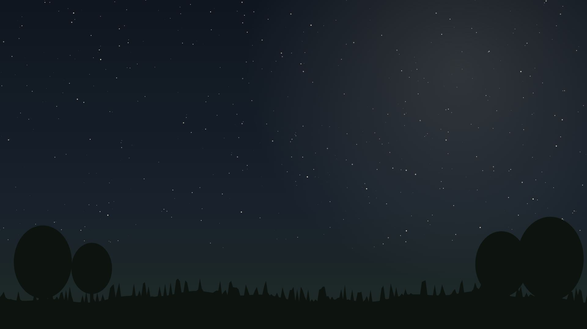
Proiect finanțat prin
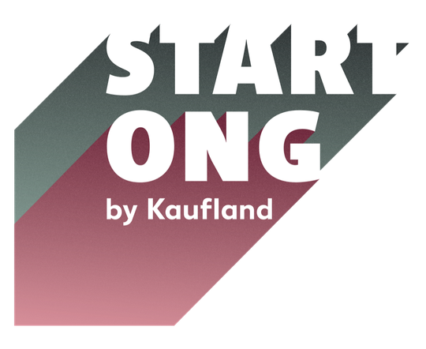
ASOCIAȚIAGrupul Verde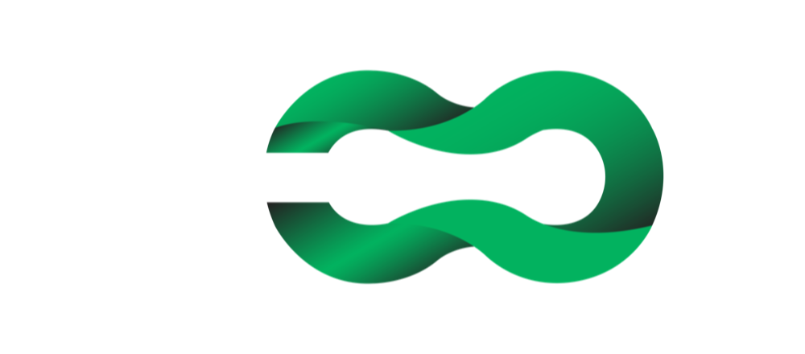
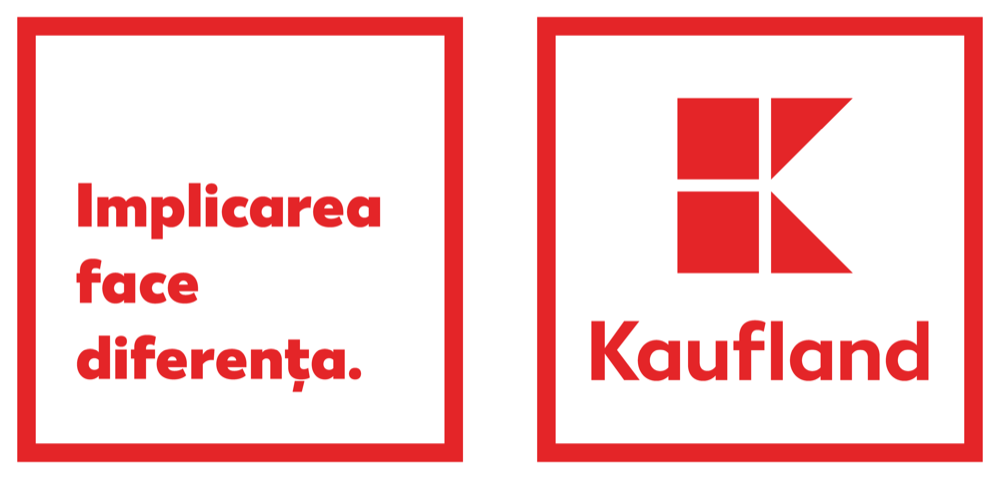
PROGRAM PENTRU CURIOȘI · 2026–2027
Ascultăm cerul
de noapte
de noapte
Construiești cu mâinile tale o stație care prinde sunetele păsărilor ce zboară noaptea peste Siret.
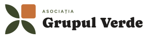
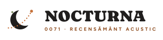
Proiect finanțat prin
ASOCIAȚIAGrupul Verde
CE FACEM ÎMPREUNĂ
Aventura ta, în șase etape
01
Descoperim
Afli ce face fiecare piesă
02
Lipim
Primii pini, cu un adult alături
03
Conectăm
17 fire colorate, ca un puzzle
04
Programăm
Îi spui stației când să asculte
05
Instalăm
Stația ta pleacă în pădure
06
Ascultăm
AI-ul ne spune ce păsări au trecut
Proiect finanțat prin
ASOCIAȚIAGrupul Verde
01
Cine suntem
Oamenii care te însoțesc în atelier și în pădure.
Proiect finanțat prin
ASOCIAȚIAGrupul Verde
Transformăm pixelii
în oxigen
în oxigen
Suntem Asociația Grupul Verde, din Adjud. Din 2021, copiii și tinerii învață la noi, gratuit, să programeze, să construiască roboți și să aibă grijă de natură.
560+
copii și tineri, din 2021
38
școli partenere
11
localități din Vrancea
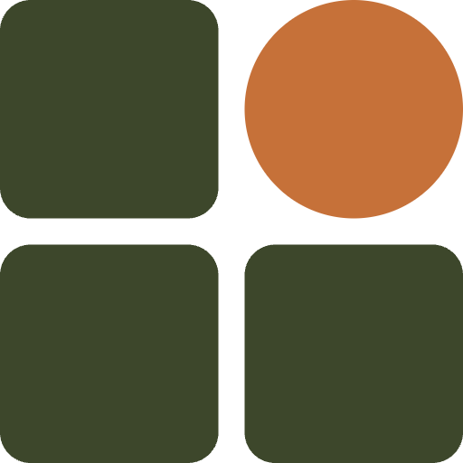
Educație digitală și AI
Programare, roboți, inteligență artificială
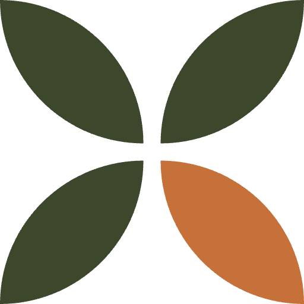
Mediu și biodiversitate
Plante, păsări și date despre natură
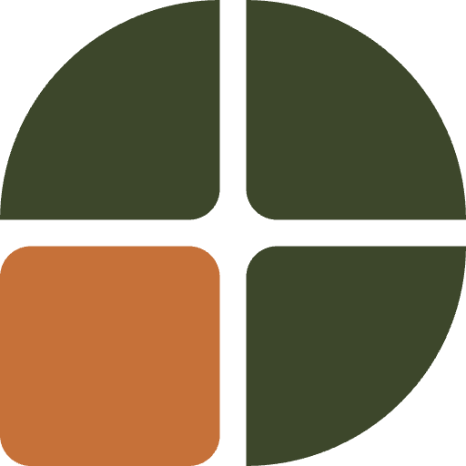
Tineret și participare civică
Hackathoane și proiecte pentru comunitate
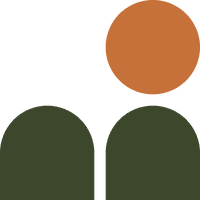
Comunități rurale
Ateliere chiar în satele din jur
Proiect finanțat prin
ASOCIAȚIAGrupul Verde
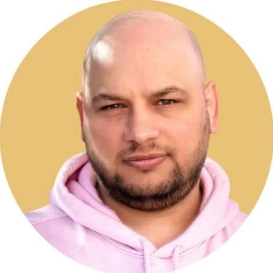
ECHIPA PROGRAMULUI
Marian Dumitru
Coordonatorul programului NOCTURNA
Programează de 19 ani: site-uri și aplicații web
Îi învață pe profesori să folosească inteligența artificială
Conduce programele educaționale ale Grupul Verde
Formator autorizat ANC
La NOCTURNA: te ajută să construiești, să programezi și să duci stația în pădure.
Proiect finanțat prin
ASOCIAȚIAGrupul Verde
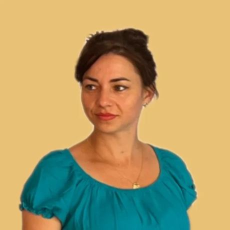
ECHIPA PROGRAMULUI
Elena-Mădălina
Trainer IT · povestitoarea proiectului
Predă programare cu Scratch, Code.org și robotul Marty
Construiește senzori cu Arduino și micro:bit
A fost mentor la hackathonul EduHack 2025
De cinci ani în echipa Grupul Verde
La NOCTURNA: fotografiază și filmează ce construiți și povestește lumii despre voi.
Proiect finanțat prin
ASOCIAȚIAGrupul Verde
ÎMPREUNĂ CU
Echipa mare din spatele programului
Colegiul Național „Emil Botta” Adjud
Elevii de clasa a X-a construiesc stațiile, alături de profesorii lor.
Școlile gimnaziale din Adjud
Elevii de clasa a VIII-a sunt cercetătorii de teren: jurnal, sunete, observații.
ANMAP – Direcția Județeană de Mediu Vrancea
Folosește datele voastre ca să protejeze păsările din luncă.
Un ornitolog independent
Verifică dacă AI-ul a recunoscut corect păsările.
Proiect finanțat prin
ASOCIAȚIAGrupul Verde
02
Misiunea NOCTURNA
O întrebare simplă: ce păsări zboară peste noi cât timp dormim?
Proiect finanțat prin
ASOCIAȚIAGrupul Verde
ȘTIAI CĂ?
Multe păsări
migrează noaptea
migrează noaptea
Zboară pe întuneric și se orientează după stele. Ca să nu se piardă, își strigă scurt una alteia.
Noi nu le vedem, dar le putem auzi. Tu construiești „urechea” care le ascultă, în lunca Siretului, chiar lângă Adjud.
Proiect finanțat prin
ASOCIAȚIAGrupul Verde
SUNETUL, VĂZUT CU OCHII
Un strigăt de pasăre arată așa
Fiecare urmă portocalie e un strigăt care durează doar o fracțiune de secundă. Programul BirdNET a învățat aceste forme și ne spune ce pasăre a trecut.
Proiect finanțat prin
ASOCIAȚIAGrupul Verde
MISIUNEA ÎN CIFRE
Un recensământ al păsărilor, făcut de voi
24
stații construite de voi
10
locuri din luncă, câte 2 stații
14 h
de ascultare în fiecare noapte
10
săptămâni de misiune
15.000+
ore de sunet: peste un an și jumătate
3
aparate profesionale, ca să vă comparați
Proiect finanțat prin
ASOCIAȚIAGrupul Verde
CUM FUNCȚIONEAZĂ
Urechi, creier și memorie
Microfonul aude
transformă sunetul în numere
Placa gândește
decide când ascultă
Cardul ține minte
un fișier pentru fiecare oră
Ceasul trezește placa
seara la 17:00
Acumulatorii dau energie
pentru zile întregi în pădure
Proiect finanțat prin
ASOCIAȚIAGrupul Verde
03
Piesele stației
Fiecare piesă are treaba ei. Hai să le cunoaștem, una câte una.
Proiect finanțat prin
ASOCIAȚIAGrupul Verde
↔ Trage cu mouse-ul ca să rotești piesa
PIESA 1 DIN 6
Creierul
Placa ESP32-S3
Un mic calculator de 6 cm, cu procesor dublu
Citește microfonul de 32.000 de ori pe secundă
Ziua doarme, seara se trezește singur
Proiect finanțat prin
ASOCIAȚIAGrupul Verde
↔ Trage cu mouse-ul ca să rotești piesa
PIESA 2 DIN 6
Urechea
Microfonul INMP441
Un microfon digital de 14 mm
Transformă vibrația aerului în numere
Singura piesă pe care o lipim
Proiect finanțat prin
ASOCIAȚIAGrupul Verde
↔ Trage cu mouse-ul ca să rotești piesa
PIESA 3 DIN 6
Memoria
Cardul microSD de 64 GB
Încap aproape 18 nopți de sunet
Un fișier pentru fiecare oră de noapte
Îl schimbăm la fiecare vizită
Proiect finanțat prin
ASOCIAȚIAGrupul Verde
↔ Trage cu mouse-ul ca să rotești piesa
PIESA 4 DIN 6
Ceasul deșteptător
Modulul DS3231
Greșește cu cel mult un minut pe an
Trezește placa în fiecare seară, la 17:00
O baterie mică îl ține mereu pornit
Proiect finanțat prin
ASOCIAȚIAGrupul Verde
↔ Trage cu mouse-ul ca să rotești piesa
PIESA 5 DIN 6
Inima de energie
Modulul cu 4 acumulatori
Patru acumulatori de 3.000 mAh
Dau curent plăcii prin cablul USB
Se încarcă din nou, la atelier
Proiect finanțat prin
ASOCIAȚIAGrupul Verde
↔ Trage cu mouse-ul ca să rotești piesa
PIESA 6 DIN 6
Casa stației
Carcasa IP66
Rezistă la ploaie, ceață și praf
Sunetul intră printr-o fereastră care privește în jos
Eticheta spune: stație de cercetare
Proiect finanțat prin
ASOCIAȚIAGrupul Verde
04
Construim, pas cu pas
Întâi legăm piesele pe masă, ca pe un puzzle. La final, totul intră în cutie.
Proiect finanțat prin
ASOCIAȚIAGrupul Verde
ÎNAINTE DE ORICE
Regulile inginerilor adevărați
Lipește doar un adult
Tu pregătești piesele, ții lupa și verifici lipiturile.
Acumulatorii, cu grijă
Nu-i scăpa, nu-i lovi, montează-i cu profesorul.
Atinge caloriferul
Scapi de electricitatea statică înainte să iei plăcile în mână.
Masa curată la final
Letconul oprit, acumulatorii în cutie, firele strânse.
Proiect finanțat prin
ASOCIAȚIAGrupul Verde
PASUL 1 DIN 11
Lipim pinii microfonului
1
Bareta de pini intră pe dedesubt
2
Vârful letconului atinge pinul și inelul
3
Fludorul curge singur în jurul pinului
4
Rezultatul: un mic vulcan lucios
Proiect finanțat prin
ASOCIAȚIAGrupul Verde
PASUL 2 DIN 11
Cardul și bateria ceasului
1
Cardul intră în slot până face clic
2
Contactele aurii merg înainte, în jos
3
Bateria CR2032 intră cu „+” în sus
4
Ceasul nu va uita ora nici fără curent
Proiect finanțat prin
ASOCIAȚIAGrupul Verde
PASUL 3 DIN 11
Microfonul se leagă de placă
1
Placa stă întoarsă, cu pinii în sus
2
Întâi firele de masă: negru și maro
3
Apoi firul roșu, pentru 3,3 V
4
Galben, verde, albastru: drumul sunetului
Proiect finanțat prin
ASOCIAȚIAGrupul Verde
PASUL 4 DIN 11
Cardul se leagă de placă
1
Portocaliu la 5 V: singurul fir de 5 V
2
Negru la masă (GND)
3
Alb, violet, gri, albastru: datele
4
Testul T3: placa citește cardul
Proiect finanțat prin
ASOCIAȚIAGrupul Verde
PASUL 5 DIN 11
Ceasul se leagă de placă
1
Roșu la 3,3 V, negru la masă
2
Verde și galben: datele ceasului
3
Alb: alarma care trezește placa
4
Testul T2: ora curge corect
Proiect finanțat prin
ASOCIAȚIAGrupul Verde
PASUL 6 DIN 11
Energia stației
1
Comutatorul pe OFF
2
Capătul plat al acumulatorului spre arc
3
Toți patru în aceeași direcție
4
Profesorul verifică, apoi pornim
Proiect finanțat prin
ASOCIAȚIAGrupul Verde
PASUL 7 DIN 11
Cablul USB aduce energia
1
Modulul de alimentare stă lângă placă
2
Cablul pleacă din ieșirea USB-A, de 5 V
3
Intră în portul USB al plăcii
4
LED-urile arată acumulatorii plini
Proiect finanțat prin
ASOCIAȚIAGrupul Verde
PASUL 8 DIN 11
Toată electronica, împreună
1
17 fire, 3 module și o placă
2
Un cablu USB pentru energie
3
Rulăm din nou testele T1–T4
4
Prima înregistrare de probă
Proiect finanțat prin
ASOCIAȚIAGrupul Verde
PASUL 9 DIN 11
Îi spunem stației ce să facă
const char *STATION_ID = "ST01";
const int START_HOUR = 17; // începe la 17:00
const int STOP_HOUR = 7; // se oprește la 07:00
const uint32_t SAMPLE_RATE = 32000;
if (!eNoapte(acum)) {
dormiPanaLa(acum, seara); // ziua doarme
}
inregistreaza(acum, bucata); // noaptea ascultă
Mai întâi, patru teste
T1 Salut, placă · placa și laptopul
T2 Ceasul · ora exactă
T3 Cardul · scrie și citește
T4 Microfonul · bate din palme
Proiect finanțat prin
ASOCIAȚIAGrupul Verde
PASUL 10 DIN 11
Fereastra microfonului
1
Facem o gaură de 12,5 mm în carcasă
2
Montăm presetupa, garnitura pe exterior
3
Microfonul stă chiar în dreptul ei
4
Un cordon de silicon, doar pe margine
Proiect finanțat prin
ASOCIAȚIAGrupul Verde
PASUL 11 DIN 11
Totul se montează în cutie
1
Modulul de alimentare pe fundul cutiei
2
Placa, cardul și ceasul, la locurile lor
3
Firele și cablul USB, cu bucle mici
4
Silicagel, apoi capacul strâns în cruce
Proiect finanțat prin
ASOCIAȚIAGrupul Verde
05
În pădure
Stația ta pleacă în luncă și ascultă, noapte de noapte, zece săptămâni.
Proiect finanțat prin
ASOCIAȚIAGrupul Verde
MISIUNEA DE TEREN
Stația ta, în copac
1
Fără cuie sau șuruburi în copac: doar coliere, care se scot la final
2
Microfonul privește în jos, ca ploaia să nu intre
3
La fiecare 10 zile: card nou și acumulatori plini
4
Totul cu acordul Direcției de Mediu
Proiect finanțat prin
ASOCIAȚIAGrupul Verde
UNDE ASCULTĂM · VRANCEA
Harta stațiilor din lunca Siretului
Proiect finanțat prin
ASOCIAȚIAGrupul Verde
CE AFLĂM DIN SUNETE
De la card la păsările de pe cer
Cardul
aducem sunetele din pădure
Hard diskul
păstrăm totul în siguranță
BirdNET
inteligența artificială ascultă tot
Comparația
cu un aparat profesional AudioMoth
Ornitologul
verifică 300 de sunete
Datele
ajung la Direcția de Mediu
Provocarea voastră: stațiile construite de voi să audă cel puțin 80% din ce aude un aparat profesional.
Proiect finanțat prin
ASOCIAȚIAGrupul Verde
CE CÂȘTIGI TU
Ce iei cu tine din NOCTURNA
Electronică
Știi ce face fiecare piesă și cum se leagă
Programare
Scrii și încarci cod pe o placă reală
Inteligență artificială
Vezi cum învață un program să recunoască păsări
Ecologie
Lucrezi într-un sit Natura 2000, cu date reale
Lucru în echipă
Construiești alături de colegi mai mari și mai mici
Un rezultat al tău
Date predate Direcției de Mediu și adeverință de participare
Proiect finanțat prin
ASOCIAȚIAGrupul Verde
Te așteptăm
în echipa NOCTURNA
în echipa NOCTURNA
Vino să asculți cerul de noapte cu noi.
grupulverde.ro · office@grupulverde.ro
CURIOS? SCANEAZĂ
Vezi ce construiesc tinerii care ascultă natura.
grupulverde.ro/specii-protejate
Întoarce telefonul pe orizontală
prezentarea e făcută pentru ecran lat
Ascultăm cerul
de noapte
Pune căștile sau dă drumul la boxe: o să auzi pădurea.
- ←→, scroll sau clicker-ul: slide-uri
- F ecran complet
- S sunet
- O cuprins
Ține telefonul pe orizontală, ca să vezi prezentarea pe tot ecranul.
Atinge dreapta ca să mergi mai departe, stânga ca să te întorci, sau glisează în sus.